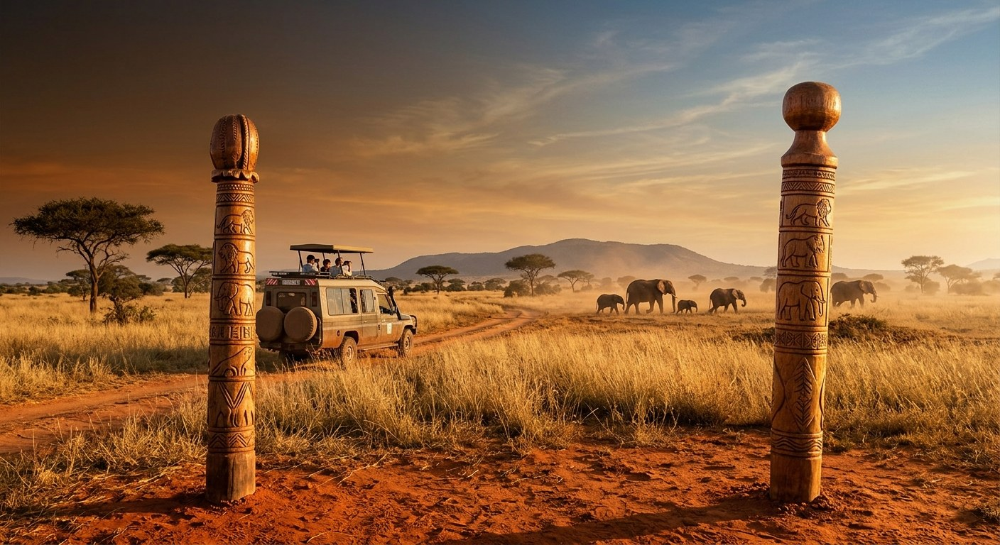

Illustration: AI-generated for EA Hospitality Pulse — synthetic image, not a photograph
For fifteen years the guest has paid for Kenya's safari land. Maktau just signed up a second payer.
At a KWS field station in Tsavo West on 21 October, Kenya closed a 160 million dollar Project Finance for Permanence deal covering 17.3 million hectares over ten years. That is about 92 US cents per hectare per year: small against the land, and larger than anything the conservancy model has ever had. The conditions attached matter more than the headline.
Maktau is a gate, not a destination. It sits on the Tsavo West side of the Mombasa corridor, a KWS field station where elephants cross between the national park and the ranchland, the sort of place that appears on an operator's route notes and nowhere in a brochure. On 21 October, Rebecca Miano, Kenya's Cabinet Secretary for Tourism and Wildlife, stood there on behalf of President William Ruto and launched a ten-year programme called Thamani Asili, the value of nature, carrying a headline figure of 160 million dollars, or 20.78 billion shillings.
The press coverage that followed, domestic and international, settled on the number and the hectares. Both are real. Neither is the thing a camp owner in the Mara, a lodge in Laikipia or a tented operation on a Tsavo ranch should be reading, because what was signed at Maktau is not a grant. It is a contract with conditions, and for the first time in the fifteen years that Kenya's conservancy model has existed at scale, those conditions put a payer other than the guest underneath the land that the guest comes to see.
That is the structural fact. Kenya's wildlife business runs on private and community land as much as on parks. The peer-reviewed count, published by Munira Anyonge Bashir and Edwin Wanyonyi in Frontiers in Conservation Science in 2024, put 230 conservancies across 9.04 million hectares, about 16 per cent of the country, with 99 community conservancies accounting for 92 per cent of the area held by association members. Dickson Ole Kaelo, chief executive of the Kenya Wildlife Conservancies Association, now counts more than 230 conservancies across over 10 million hectares, up from 78 in 2013. The land is there. What has never been there is a second revenue line.
"The greatest threat to Kenya's conservancy movement is no longer community willingness," Ole Kaelo wrote this year. "It is finance."
The model as built is elegant and brittle in equal measure. A lodge or camp collects a conservation fee from each guest for each night. That fee funds the lease the conservancy pays the landowner, and the lease is what persuades the landowner not to fence, subdivide, plough or sell. The Frontiers authors describe it plainly: conservancies derive tourism conservation fees that are then invested in social and economic ventures. Strip out the guest and nothing underneath the arrangement holds. In 2020 the guest was stripped out.
What happened next is the best-documented stress test the model has had, and it is worth recalling precisely rather than vaguely. Conservation International's African Conservancies Fund, reporting in July 2023, recorded tourism revenue in the Greater Mara falling by more than 90 per cent, and disbursed over two million dollars in loans between December 2020 and December 2022 to four conservancies, Mara North, Olare Orok, Motorogi and Ol Kinyei, covering 70,000 hectares, which unlocked a further 2.8 million dollars of operational funding. Before the pandemic, the release noted, the landowner and investor relationship was entirely dependent on tourism revenue.
"Support came on time, so we normalized operations as if there were no crisis," said Simon Nkoitoi, senior warden at Ol Kinyei.
Elsewhere in the ecosystem it did not come on time. Daniel Sopia, chief executive of the Maasai Mara Wildlife Conservancies Association, confirmed at the time that investors had cut lease payments by 50 per cent. A 660 million shilling German grant eventually reached 16 Mara conservancies, and Annett Gunther, then Germany's ambassador in Nairobi, was explicit about what the money was for: "We do not want to see people sell their land because of the effect of Covid-19." The emergency was handled. It was handled by philanthropy and a bilateral donor, arriving late, at a scale set by whoever happened to be in the room.
Thamani Asili is the institutional version of that improvisation, and the mechanism is the point. Project Finance for Permanence is a single-close instrument. Enduring Earth, the partnership behind it, founded in 2020 by The Nature Conservancy, The Pew Charitable Trusts, World Wildlife Fund and ZOMA LAB, describes closing as the inflection point when full funding is guaranteed and legal obligations are activated: every financial, legal, institutional and social commitment is secured in one binding agreement, capital is placed in a conservation trust fund, and disbursement is then performance-based, released against measurable outcomes and agreed milestones over a minimum of ten years. Governments do not merely contribute cash. Under the model's government commitment component they make formal policy pledges embedded in laws, regulations or policies designed to persist across administrations, and they undertake to move conservation costs into the national budget over time.
Kenya's half of the money is 80 million dollars, or 10.39 billion shillings, over ten years, matched by 80 million to be mobilised from philanthropy through TNC and Enduring Earth. The donor list runs to dozens of names, including Margaret A. Cargill Philanthropies, the Rob Walton Foundation, the Robert W. Wilson Charitable Trust and the San Diego Zoo Wildlife Alliance. The money is administered by a newly created independent trust, the Thamani Asili Fund for Kenya, which disburses against targets rather than against goodwill. Four landscapes are named: Tsavo to Coastal, Greater Ewaso, Greater Rift to Western, and Southern Kenya, the last of which carries the Maasai Mara and its connection to the Serengeti. Thirty-one counties are covered. The stated outputs are 2.7 million hectares of newly conserved area, 11 million hectares of existing conservation area brought under better management, 6 million hectares where communities are to be equipped to manage land better, about 7,800 direct jobs and 15,000 indirect ones in ecotourism, rangeland work, restoration and carbon, 1.6 million direct beneficiaries, and 7.5 million tonnes of avoided emissions by 2035.
"In Tsavo, conservation is not just about protecting wildlife; it is about protecting a way of life," said Prof Erustus Kanga, director general of the Kenya Wildlife Service. Ruth Masha, TNC's country director for Kenya, framed the design: "We know that when communities lead, conservation can deliver lasting results." Ryan Bidwell, who runs TNC's PFP programme, was blunter about what the money is meant to do, telling Reuters that there is a substantial gap that would be largely closed.
Here is where an operator should get sceptical, and the arithmetic is the place to start. One hundred and sixty million dollars across 17.3 million hectares over ten years is about 92 US cents per hectare per year. That is not a lease rate, and nobody has claimed it is one. It is a floor: enough to fund management, rangers, planning, enterprise development and a trust fund that can hold the line through a bad year, and nowhere near enough to replace the conservation fee a camp collects at the bed. Anyone reading the launch as relief on their fee schedule has misread it. The guest still pays for the land. What has changed is that the guest is no longer the only thing standing between a landowner and a subdivision.
Two caveats deserve to travel with the number. The first is that the published components do not reconcile cleanly to the headline: 2.7 million hectares of new area, 11 million better managed and 6 million under improved community management sum to 19.7 against a stated 17.3 million, which suggests overlap the launch material does not explain. Until the trust publishes its own baseline, treat the hectare split as indicative.
The second is harder, and it concerns the state's half. Eight million dollars a year, roughly 1.04 billion shillings, is genuinely affordable for the Kenyan exchequer, which is a mark in the programme's favour rather than against it. But the same ministry carries an older promise to the same communities. In November last year, the Wildlife Principal Secretary, Silvia Museiya Kihoro, told the National Assembly's Public Accounts Committee that wildlife compensation claims had reached 3.5 billion shillings with more than 20,000 claims still pending. "We have people who have been waiting since 2014, and it is now 2025," she said. Human-wildlife conflict mitigation is written into Thamani Asili's Tsavo to Coastal workplan. Operators who will be asked by guests, by certification schemes and increasingly by corporate buyers to vouch for the conservation story attached to their bed-night fee should know which part of that story the state has not yet delivered on, and should expect to be asked.
There is also a competitive wrinkle that the launch coverage did not touch. The programme's planned activities include ecological tourism and other nature-based businesses, and 7,800 direct jobs in ecotourism and allied sectors implies enterprise creation, not just ranger recruitment. That means concessional and philanthropic capital building tourism supply inside the four landscapes where existing camps already trade. Over a decade, in a country whose own hotel pipeline debate is about whether East Africa is building faster than it is selling, that is a new variable in the rate card and not only a good deed. Ademola Ajagbe, TNC's regional managing director for Africa, argued at the launch that the programme should be judged by livelihood gains and local opportunity rather than by the size of the fund. Operators should take him at his word and read the enterprise plan as closely as the conservation plan.
None of which argues against the deal. Kenya has roughly 20 to 23 per cent of its land and sea under conservation against a 30 per cent target for 2030, and the World Bank's Nature's Bottom Line, published in March, found 44 per cent of Kenyan GDP comes from sectors highly or very highly dependent on ecosystem services. A ten-year, legally bound, milestone-disbursed instrument is a better answer to that exposure than another emergency grant arriving eighteen months late. It is the third PFP in Africa and the tenth through Enduring Earth, which is to say the model is no longer experimental.
The practical instruction is narrow. If your property sits in Tsavo to Coastal, Greater Ewaso, Greater Rift to Western or Southern Kenya, your landlord's balance sheet is about to acquire a second line, your landscape is about to acquire a milestone schedule written by a trust you did not sit on, and both will shape access rules, lease renegotiations and the conservation narrative you sell for the next ten years. Ask the Thamani Asili Fund for its targets and its reporting calendar now, while the governance is still being built, rather than in year three when the first disbursement review lands. The fee you collect at the bed is no longer the only thing paying for the view. It is still the thing that pays the rent.
📣 Telegram 💬 WhatsApp 💼 LinkedIn 📚 All guides